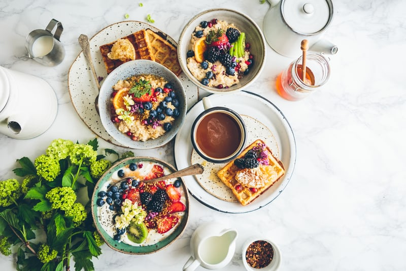
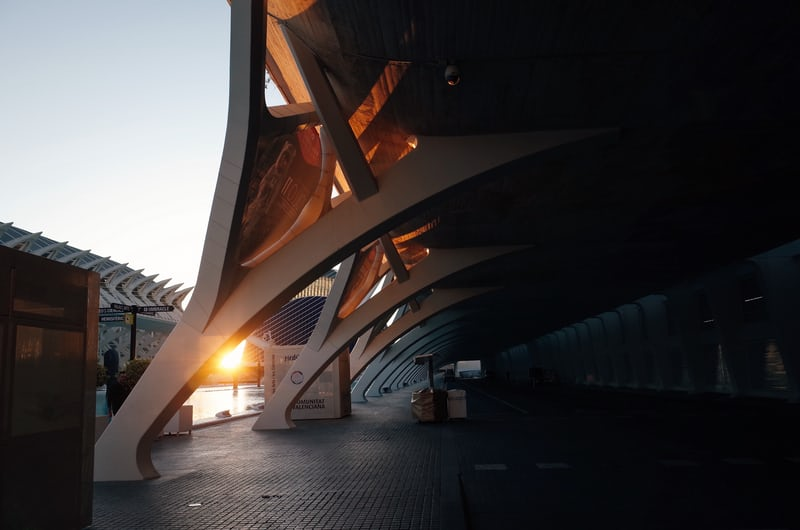
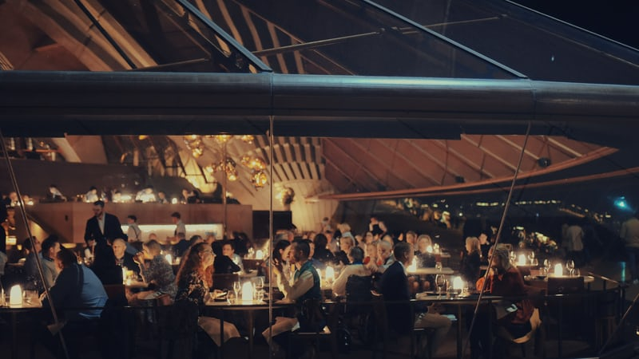
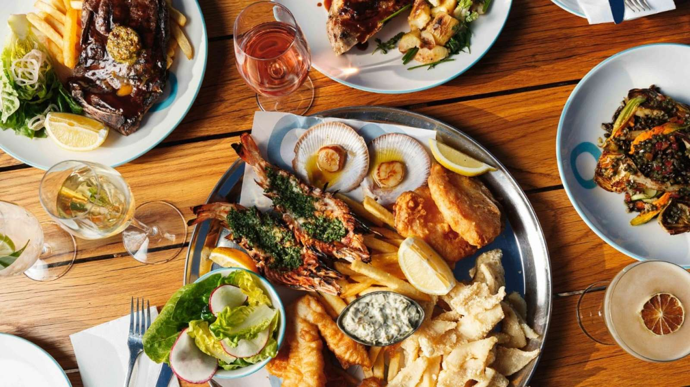
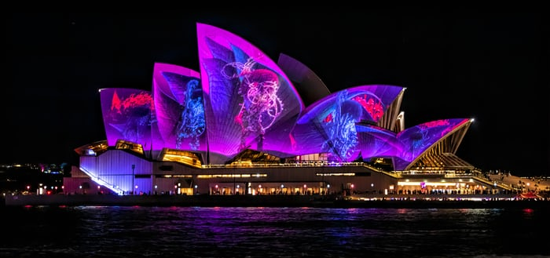

Experience the warm sunshine and fresh air of Sydney Harbour

Source: Brooke Lark in Unsplash
8:30 Sunshine and Breakfast
Before the rush, sit in a restaurant on the coast, enjoy a western breakfast and coffee, and
watch the boats come and go. After breakfast, grab your camera and take a walk around the Opera
House, the most refreshing opera house of the day, to start your day.

Source: A M in Unsplash
10:00 Tour of the Interior of the Building
Take a one-hour interpretive tour to inspire even more architectural art. Inside the opera house,
a docent will tell you the history behind the legendary building, and you'll also have the opportunity
to enter the world-famous concert and theatre halls and catch an artistic performance in rehearsal.
For more information, please visit the official Sydney Opera House website.
Afternoon
Change the "casual" lifestyle
12:00 Lunch at Leisure
If you like to experiment with different styles of Western food, you'll be pleasantly surprised by the
variety of restaurants that face the expansive Sydney Harbour with views right in front of you, using
seasonal Australian produce in every dish and cutting through the hassle to showcase creative cooking
in starters, mains and desserts.

Source: Eriksson Luo in Unsplash
2:00 PM Slow Tour of the Opera House
Slow down and explore the 'hidden map' of the area, reach out and touch the world-famous 'shell bricks',
wrap your hand around the back of the Opera House for a wider view of the harbour; visit the 'Royal
Botanic Gardens'. "The Royal Botanic Gardens, walk to the famous "Mrs. Macquarie's Chair", turn on the
panoramic mode and see it from a distance. Elegance of the Opera House and Harbour Bridge.
Source: Cameron Tidy in Unsplash
Night
Enchanted by the romantic light and night

Source: Steve Woodburn in Sydney Opera House
6:00 PM Harbor Dinner
In the evening, watch the sunset at the Opera House, you can choose to taste Australian seafood at
Opera Bar, drink a cocktail and dance to live music; if you like fine western food, you can't miss
Bennelong Western Restaurant in Sydney, managed by the famous Australian chef Peter Gilmore, each
dish is carefully selected and seasoned to match, the restaurant's luxurious and very moody décor
will make your evening unforgettable.

Source: Trevor McKinnon in Unsplash
9:00 PM light show
The 15-minute Badu Guli Light Show takes place every evening at 7pm, 8pm and 9pm. The colourful
patterns are projected onto the Opera House's 'sailboat' to introduce visitors from around the world
to the unique cultural iconography of Australia's Aboriginal people and the stories of their people.